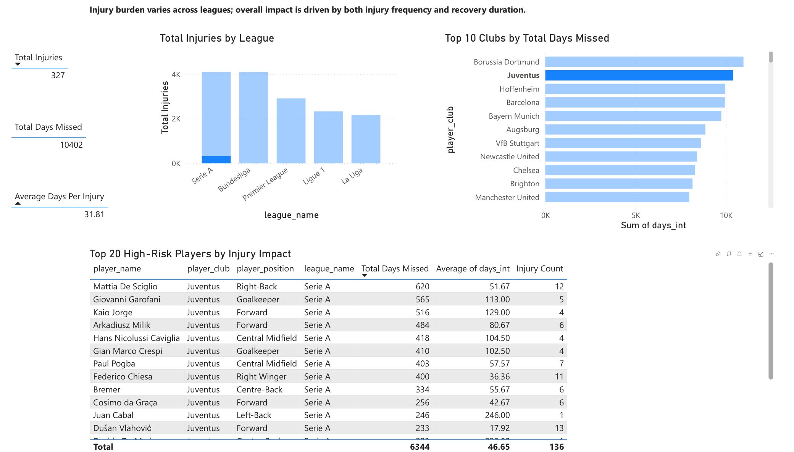
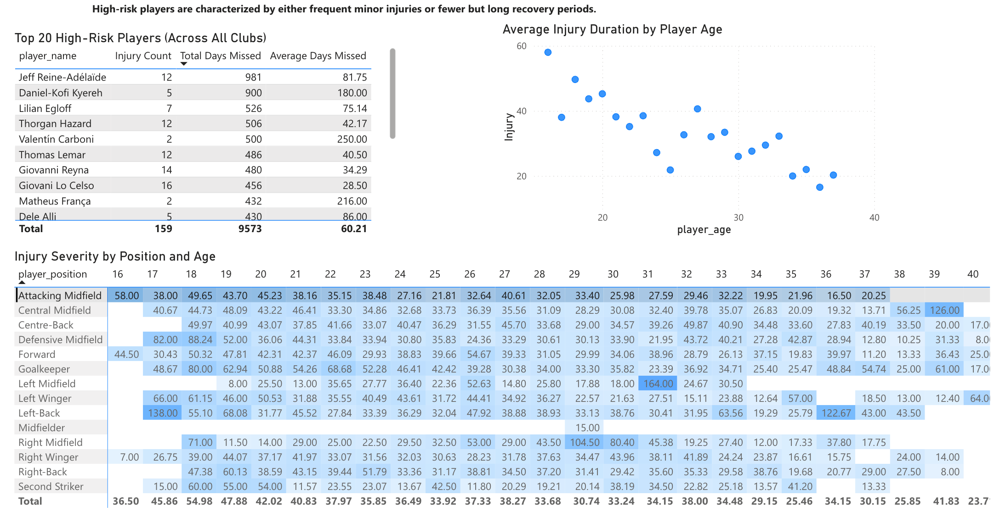
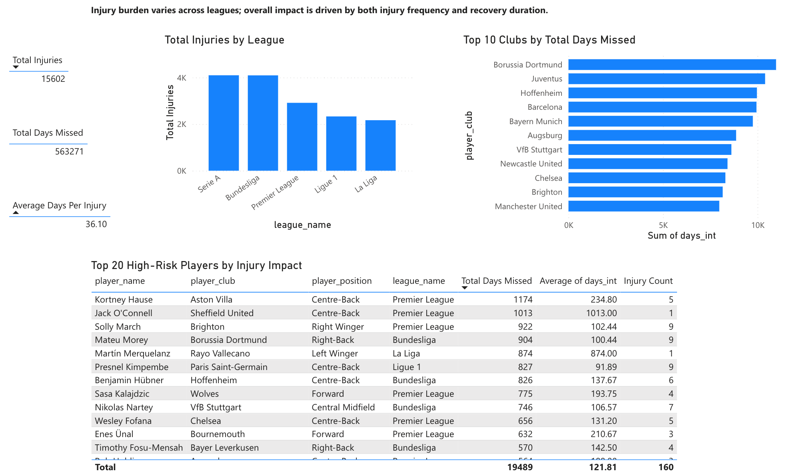
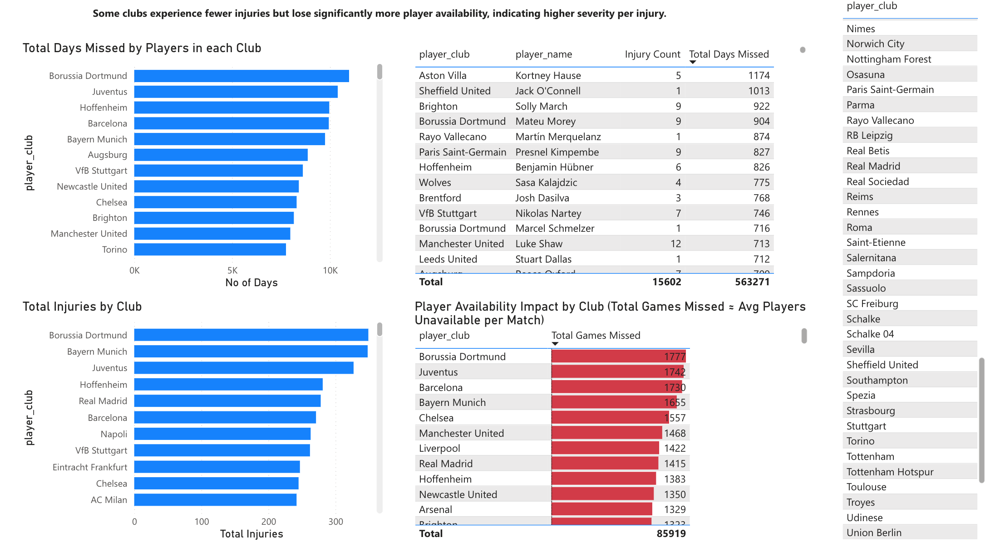

Problem
Clubs lose points and money when key players are unavailable — but injury impact is often tracked in fragments. This case study consolidates injury history into a decision-ready view to answer: where is availability loss concentrated, who drives it, and which profiles are most at risk?
Approach
- Modeled injury events in SQL (MySQL), cleaned/validated records, and built derived metrics for days missed, severity, and risk concentration.
- Built a multi-page Power BI dashboard with KPI summaries, club comparisons, and player-level risk profiling for non-technical stakeholders.
- Validated dashboard totals and breakdowns by cross-checking visuals against SQL aggregates (joins, group-bys, derived measures).
Evidence
Selected views highlighting club availability loss, player risk profiles, and injury severity patterns.




Insights
- Availability loss is concentrated: a small set of clubs and severe injuries account for a disproportionate share of total days missed.
- High-impact players drive totals: player-level risk profiling surfaces individuals whose absence explains a large portion of club-level loss.
- Predictable patterns exist: severity shifts by age/position can inform conditioning priorities and rotation planning.
Outcome
- Delivered a stakeholder-ready Power BI report to support medical + roster planning.
- Built a repeatable SQL foundation to refresh metrics as new injury data arrives.